文本
试题
题尾
卷尾
其他
页面布局

级别 | 复习模块 | 题型 | 考查内容 |
1级 | v-t图像 | 选择题/计算题 | v-t图像分析 |
2级 | x-t图像 | 选择题/计算题 | x-t图像分析 |
3级 | 其它图像 | 选择题/计算题 | 特殊图像分析 |
4级 | 追及问题 | 选择题/计算题 | 运动学公式、图像应用 |
5级 | 多过程问题 | 选择题/计算题 | 运动学公式、图像应用 |


在跳伞比赛中，一跳伞运动员从高空竖直下落的
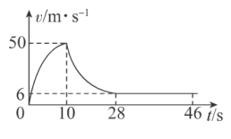

笛音雷”是春节期间常放的一种鞭炮，其着火后一段时间内的速度一时间图像如图所示（不计空气阻力，取竖直向上为正方向）,其中
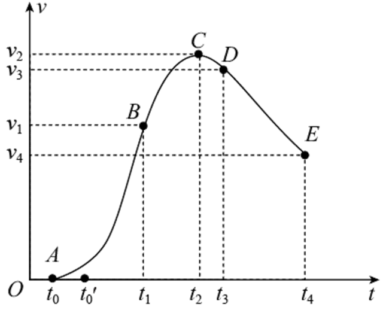
笛音雷”在
笛音雷”在
笛音雷”在
某航拍仪从地面由静止启动，在升力作用下匀加速竖直向上起飞．当上升到一定高度时，航拍仪失去动力．假设航拍仪在运动过程中沿竖直方向运动且机身保持姿态不变，其
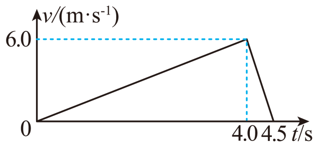
某同学用手机中的速度传感器记录电动车做直线运动的速度与时间关系如图所示，下列说法正确的是（ ）
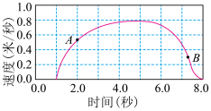
在平直公路上同向行驶的甲车和乙车，其位置随时间变化情况分别如图中直线a和曲线b所示。t=0时，xa=4m，xb=2m。t=2s时，直线a和曲线b刚好相切。已知乙车做匀变速直线运动。在0~2s过程中（ ）
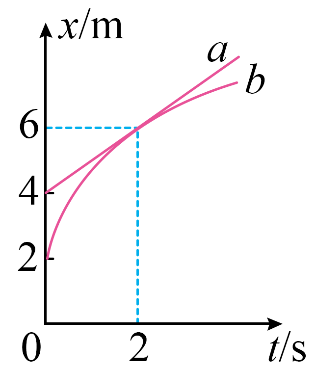
一小车沿直线运动，从
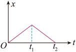
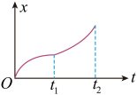
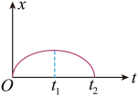
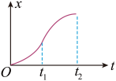
a、b两质点
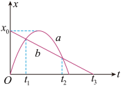
北京冬奥会速滑比赛中的某段过程，摄像机和运动员的位移x随时间t变化的图像如图，下列说法正确的是（ ）
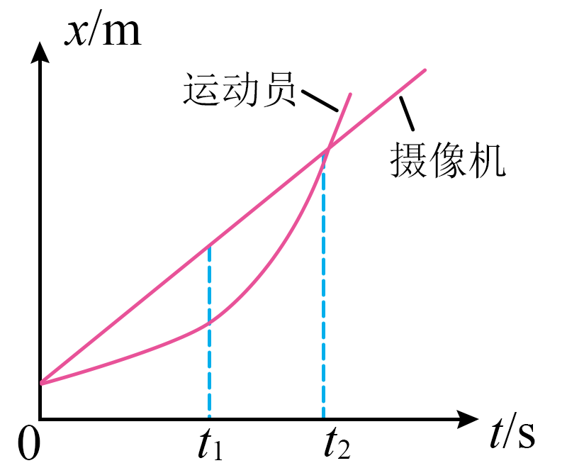
研究直线运动，我们常借助图像获取更多信息．
匀变速直线运动的速度时间图像，如图甲所示用图线与
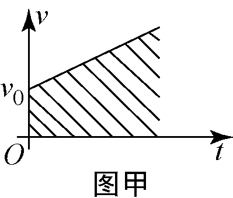
若物体做匀变速直线运动，研究位移与时间的关系，画出
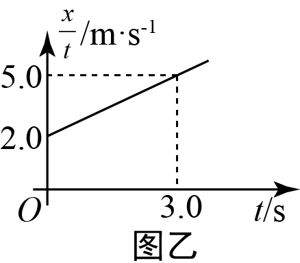
若物体做减速直线运动，速度与位置坐标成反比，画出
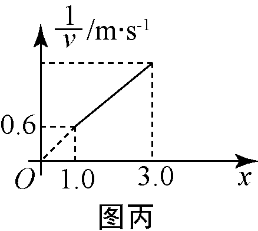
类比是一种常用的研究方法。对于直线运动，教科书中讲解了由v－t图像求位移的方法。请你借鉴此方法，如图所示，下列对于图线和横轴围成面积的说法，其中不正确的说法是（ ）
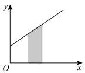
如图1所示，一质量为2kg的物块受到水平拉力F作用，在粗糙水平面上作加速直线运动，其
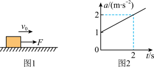
列车进站可简化为匀减速直线运动，在此过程中用t、x、v和a分别表示列车运动的时间、位移、速度和加速度。下列图像中正确的是（ ）
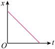
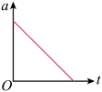
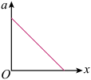
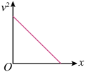
冰壶在冰面上做匀减速直线运动直到速度为零，以冰壶运动方向为正方向，用t、x、v分别表示冰壶运动的时间、位移和速度，此过程中关于冰壶的运动，下列图像可能正确的是（ ）
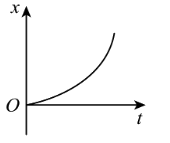
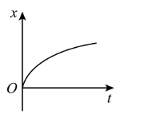
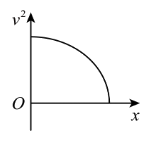
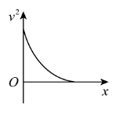
如图甲所示，一物块（可视为质点）从倾角
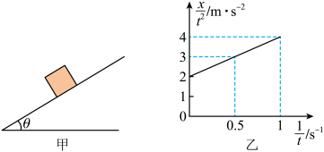
甲、乙两车在公路上行驶的
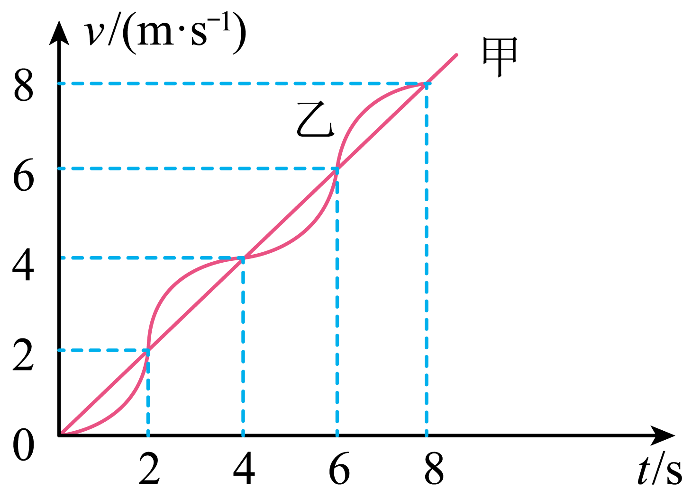
在
甲车
两车相距的最大距离为
甲、乙两车在平直公路上同向行驶，其中
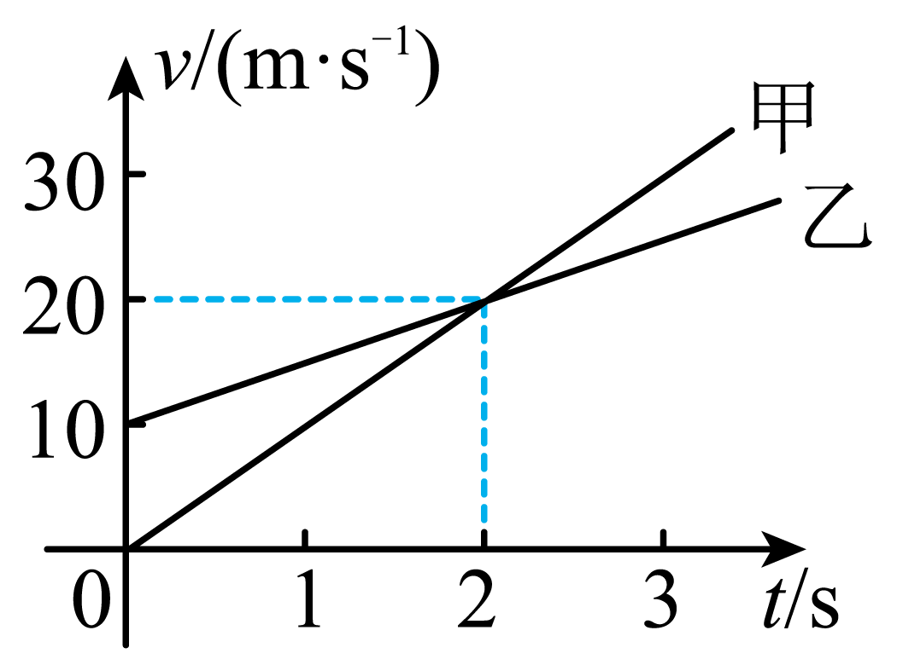
在平直的公路上，一辆小汽车前方26m处有一辆大客车正以12m/s的速度匀速前进，这时小汽车从静止出发以
甲、乙两车在同一平直公路上，从同一位置沿相同方向做直线运动，它们运动的速度v与时间t关系图象如图所示．对甲、乙两车运动情况的分析．下列结论正确的是（ ）
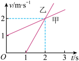
甲乙两汽车在一平直公路上同向行驶，在t=0到t=t1的时间内，它们的v-t图象如图所示，在这段时间内（ ）
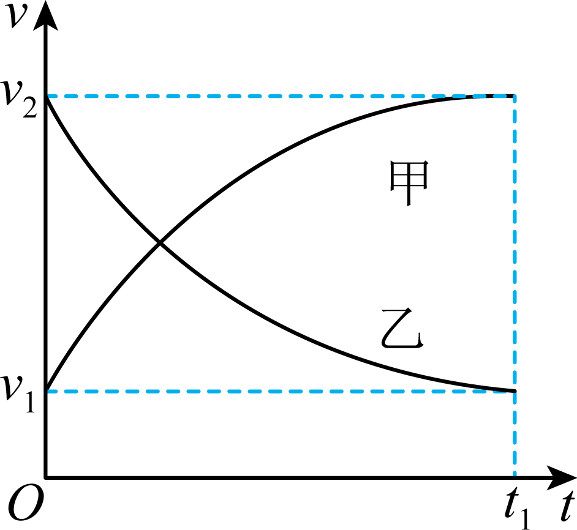
汽车甲的平均速度比乙大
汽车乙的平均速度等于
甲乙两汽车的位移相同
汽车甲的加速度大小逐渐减小，汽车乙的加速度大小逐渐增大
ETC不停车收费系统是目前世界上最先进的路桥收费方式，它通过安装在车辆挡风玻璃上的车载电子标签与设在收费站ETC通道上的微波天线进行短程通信，利用网络与银行进行后台结算处理，从而实现车辆不停车就能支付路桥费的目的，如图是汽车分别通过ETC通道和人工收费通道的流程图。假设汽车以
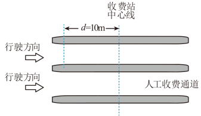
如图所示，江面上相距6L的
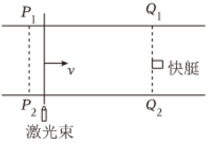
物体甲的位移与时间图象和物体乙的速度与时间图象分别如图甲、乙所示，则这两个物体的运动情况是（ ）
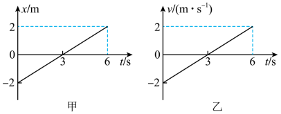
很多智能手机都有加速度传感器，能通过图像显示加速度情况．用手掌托着手机，打开加速度传感器，手掌从静止开始迅速上下运动，得到如图所示的竖直方向上加速度随时间变化的图像，该图像以竖直向上为正方向．由此可判断出（ ）
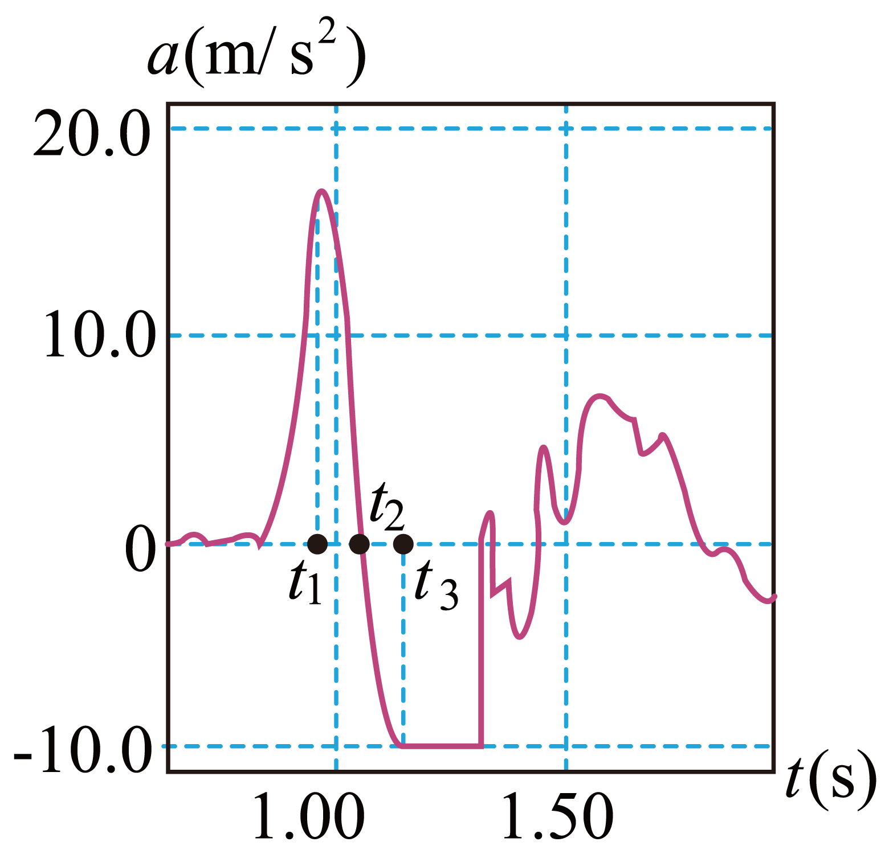
利用速度传感器与计算机结合，可以自动做出物体的速度v随时间t的变化图像。若某次实验中获得的
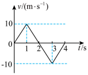
甲、乙两辆汽车在平直路面上同向运动，经过同一路标时开始计时，两车在
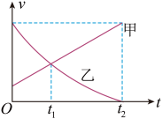
高速公路的ETC电子收费系统如图所示，ETC通道的长度是识别区起点到自动栏杆的水平距离。某汽车以
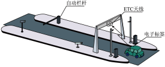
一辆汽车在教练场上沿平直道路行驶，以x表示它相对于出发点的位移。汽车在0~40s时间内的x—t图像如图所示。下列关于汽车的说法正确的是（ ）
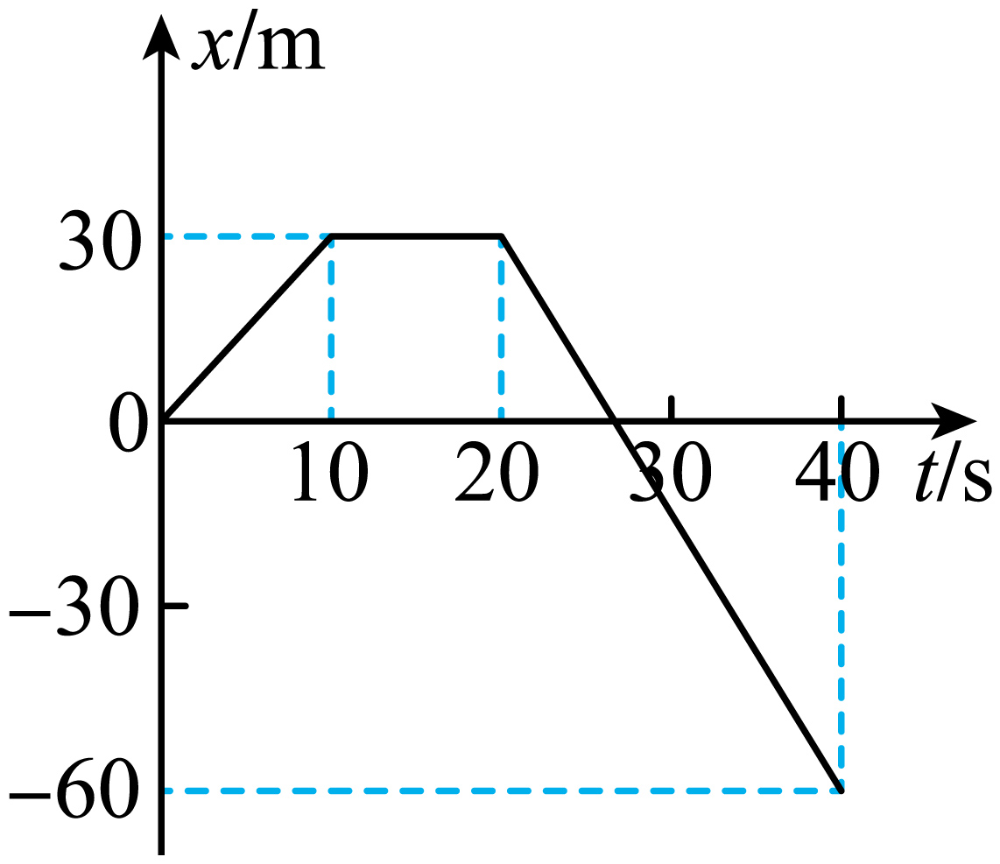
甲、乙两物体零时刻开始从同一地点向同一方向做直线运动，位移-时间图像如图所示。则下列选项正确的是（ ）
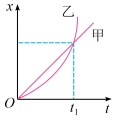
如图所示为一质点做直线运动的速度−时间图像，下列说法中正确的是（ ）
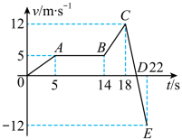
笛音雷”是春节期间常放的一种鞭炮，其着火后一段时间内的速度一时间图像如图所示（不计空气阻力，取竖直向上为正方向）,其中
笛音雷”在
笛音雷”在
笛音雷”在
如图1所示，一质量为2kg的物块受到水平拉力F作用，在粗糙水平面上作加速直线运动，其a-t图像如图2所示，t=0时其速度大小为2m/s．物块与水平面间的动摩擦因数．
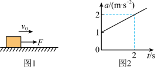
一人乘电梯上楼，在竖直上升的过程中如果加速度a随时间t变化的图线如图所示，以竖直向上为加速度a的正方向，则（ ）
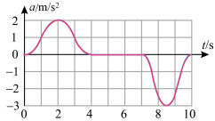
甲、乙两辆汽车在平直的公路上沿同一方向做直线运动，
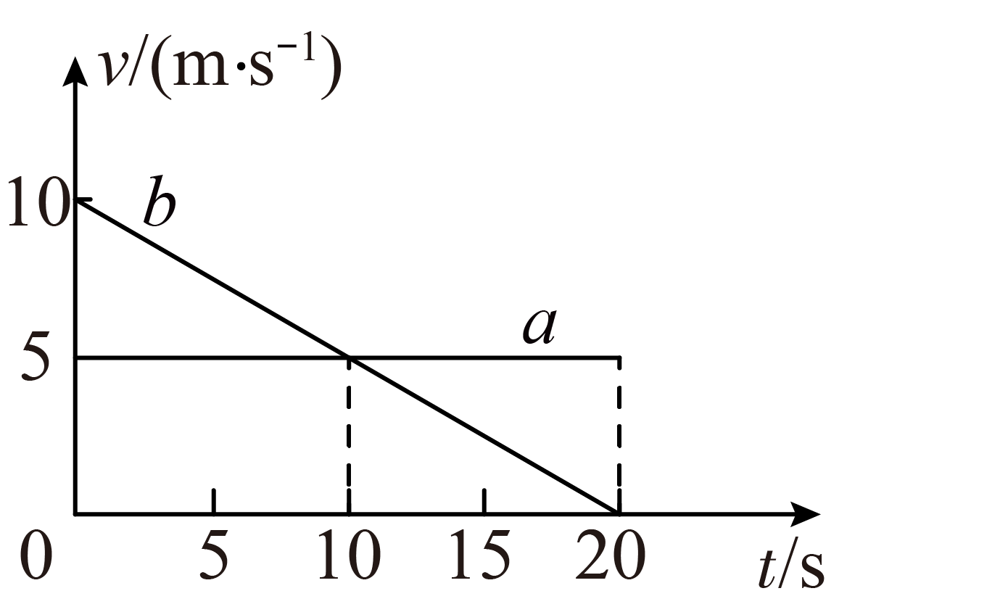
在
在
在
在
在高速公路上，甲、乙两汽车在同一条平直的车道上行驶，甲车在前、乙车在后。t=0时刻，发现前方有事故，两车同时开始刹车，两车刹车后的v-t图像如图所示，下列说法正确的是（ ）
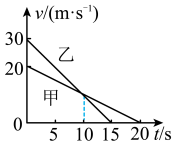
2016里约奥运会男子50米自由泳决赛美国埃尔文夺得金牌。经视频分析发现：他从起跳到入水后再经过加速到获得最大速度2.488m/s所用的时间总共为2.5秒，且这一过程通过的位移为x1=2.988m。若埃尔文以最大速度运动的时间为19s，若超过该时间后他将做1m/s2的匀减速直线运动。则这次比赛中埃尔文的成绩为（ ）
如图所示，一滑块（可视为质点）从
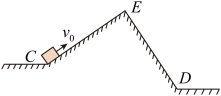
下载设置
![]()